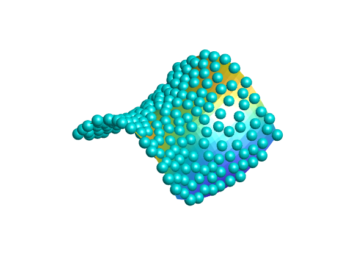

clc
clear
[X,Y] = meshgrid(-60000:5000:60000);
Z = X.^2-2*Y.^2;
Z=Z/160000;
x0=[];y0=[];z0=[];
px=[];py=[];pz=[];
figure
surf(X,Y,Z);
light('Style','infinit','Position',[0 -0.6 1]);
axis equal;
[x,y,z] = sphere;
CO(:,:,1) = zeros(21);
CO(:,:,2) = ones(21);
CO(:,:,3) = ones(21);
hold on
for i=1:20000
x0(i)=-60000+120000*rand;
y0(i)=-60000+120000*rand;
z0(i)= (x0(i).^2-2*y0(i).^2)/160000;
overlap=0;
for j=1:length(px)
if ((px(j)-x0(i))^2+(py(j)-y0(i))^2+(pz(j)-z0(i))^2)<80000000
overlap=1;
end
end
if overlap==0
surf(5000*x+x0(i),5000*y+y0(i),5000*z+z0(i),CO);
px=[px x0(i)];py=[py y0(i)];pz=[pz z0(i)];
end
if length(px)==200
break
end
end
shading interp
axis off
hold off
view([-45,40])
